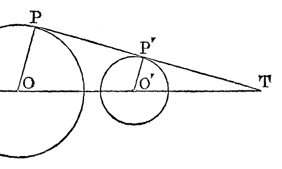
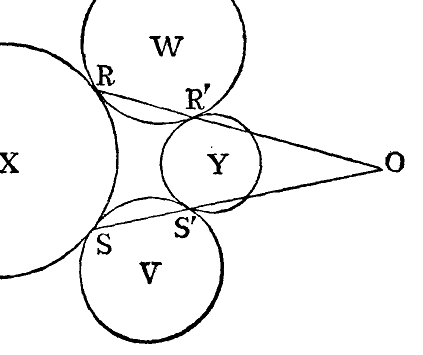

Section II: Centres and Axes of Similitude¶
John Casey — A Sequel to the First Six Books of the Elements of Euclid (5th ed., 1888), Book VI, pp. 82–86
f. 0108 · p. 82
Definition¶
Def.—If the line joining the centres of two circles be divided internally and externally in the ratio of the radii of the circles, the points of division are called, respectively, the internal and the external centre of similitude of the two circles.
From the Definitions it follows that the point of contact of two circles which touch externally is an internal centre of similitude of the two circles; and the point of contact of two circles, one of which touches another internally, is an external centre of similitude. Also, since a right line may be regarded as an infinitely
f. 0109 · p. 83large circle, whose centre is at infinity in the direction perpendicular to the line, the centres of similitude of a line and a circle are the two extremities of the diameter of the circle which is perpendicular to the line.
Propositions¶
Prop. 1.—The direct common tangent of two circles passes through their external centre of similitude.
Dem.—Let $O, O'$ be the centres of the $\odot\text{s}$; $P, P'$ the points of contact of the common tangent; and let $PP'$ and $OO'$ produced meet in $T$; then, by similar $\triangle\text{s}$,
$$ OT : O'T :: OP : O'P'. $$
Hence the line $OO'$ is divided externally in $T$ in the ratio of the radii of the circles; and therefore $T$ is the external centre of similitude.


Cor. 1.—It may be proved, in like manner, that the transverse common tangent passes through the internal centre of similitude.
Cor. 2.—The line joining the extremities of parallel radii of two $\odot\text{s}$ passes through their external centre of similitude, if they are turned in the same direction; and through their internal centre, if they are turned in opposite directions.
Cor. 3.—The two radii of one $\odot$ drawn to its points of intersection, with any line passing through either centre of similitude, are respectively $\parallel$ to the two radii of the other $\odot$ drawn to its intersections with the same line.
Cor. 4.—All lines passing through a centre of similitude of two $\odot\text{s}$ are cut in the same ratio by the $\odot\text{s}$.
Prop. 2.—If through a centre of similitude of two circles we draw a secant cutting one of them in the points $R, R'$, and the other in the corresponding points $S, S'$; then
f. 0110 · p. 84the rectangles $OR \cdot OS', OR' \cdot OS$ are constant and equal.
Dem.—Let $a, b$ denote the radii of the circles; then we have (Cor. 3, Prop. 2),
$$ a : b :: OS : OR; $$
therefore
$$ a : b :: OS \cdot OS' : OR \cdot OS'; $$
but $OS \cdot OS' =$ square of the tangent from $O$ to the circle whose radius is $a$, and is therefore constant. Hence, since the three first terms of the proportion are constant, the fourth term is constant.
In like manner, it may be proved that $OR' \cdot OS$ is a fourth proportional to $a, b$ and $OS \cdot OS'$; $\therefore OR' \cdot OS$ is constant.
Dem.—Let the radii of the $\odot\text{s}$ be denoted by $a, b, c$, their centres by $A, B, C$; the external centres of similitude by $A', B', C'$, and their internal centres by $A'', B'', C''$. Now, by Definition,
$$ \frac{AC'}{C'B} = -\frac{a}{b}; $$
$$ \frac{BA'}{A'C} = -\frac{b}{c}; $$
$$ \frac{CB'}{B'A} = -\frac{c}{a}. $$
Hence the product of the three ratios on the right is negative unity; and therefore the points $A', B', C'$ are collinear (Cor. 1, Prop. 4).
f. 0111 · p. 85Again, let us consider the system of points $A', B'', C''$. We have, as before,
$$ \frac{AC'}{C'B} = -\frac{a}{b}; $$
$$ \frac{BA''}{A''C} = \frac{b}{c}; $$
$$ \frac{CB''}{B''A} = \frac{c}{a}. $$
Hence the product of the ratios in this case also is negative unity; and $\therefore A', B'', C''$ are collinear; and the same holds for $A'', B', C''$; $A'', B'', C'$. Hence the collinearity of centres of similitude will be one external and two internal, or three external centres of similitude.


Cor. 1.—If a variable $\odot$ touch two fixed $\odot\text{s}$, the line joining the points of contact passes through a fixed point, namely—a centre of similitude of the two $\odot\text{s}$; for the points of contact are centres of similitude.
Cor. 2.—If a variable $\odot$ touch two fixed $\odot\text{s}$, the tangent drawn to it from the centre of similitude through which the chord of contact passes is constant.
Prop. 4.—If two circles touch two others, the radical axis of either pair passes through a centre of similitude of the other pair.
Dem.—Let the two $\odot\text{s}$ $X, Y$ touch the two $\odot\text{s}$ $W, V$; let $R, R'$ be their points of contact with $W$, and $S, S'$ with $V$. Now, consider the three $\odot\text{s}$ $X, W, Y$; $R, R'$ are internal centres of similitude. Hence the line $RR'$ passes through the external centre of similitude of $X$ and $Y$.
f. 0112 · p. 86In like manner, the line $SS'$ passes through the same centre of similitude. Hence the point $O$, where these lines meet, will be the external centre of similitude of $X$ and $Y$; and $\therefore$ the rectangle $OR \cdot OR' = OS \cdot OS'$ (Prop. 2); $\therefore$ tangent from $O$ to $W =$ tangent from $O$ to $V$, hence the radical axis of $W$ and $V$ passes through $O$.
Def.—The circle on the interval, between the centres of similitude of two circles as diameter, is called their circle of similitude.
Prop. 5 (Circle of Similitude).—The circle of similitude of two circles is the locus of the vertex of a triangle whose base is the interval between the centres of the circles, and the ratio of the sides that of their radii.
Dem.—When the base and the ratio of the sides are given, the locus of the vertex (see Prop. 7, Section I) is the $\odot$ whose diameter is the interval between the points in which the base is divided in the given ratio internally and externally; that is, in the present case, the $\odot$ of similitude.
Cor. 1.—If from any point in the $\odot$ of similitude of two given $\odot\text{s}$ lines be drawn to their centres, these lines are proportional to the radii of the two given $\odot\text{s}$.
Cor. 2.—If, from any point in the $\odot$ of similitude of two given $\odot\text{s}$, pairs of tangents be drawn to both $\odot\text{s}$, the angle between one pair is equal to the angle between the other pair.
This follows at once from Cor. 1.
Cor. 3.—The three $\odot\text{s}$ of similitude of three given $\odot\text{s}$ taken in pairs are coaxal.
For, let $P, P'$ be the points of intersection of two of the $\odot\text{s}$ of similitude, then it is evident that the lines drawn from either of these points to the centres of the three given $\odot\text{s}$ are proportional to the radii of the given $\odot\text{s}$. Hence the third $\odot$ of similitude must pass through the points $P, P'$. Hence the $\odot\text{s}$ are coaxal.
Cor. 4.—The centres of the three $\odot\text{s}$ of similitude of three given $\odot\text{s}$ taken in pairs are collinear.